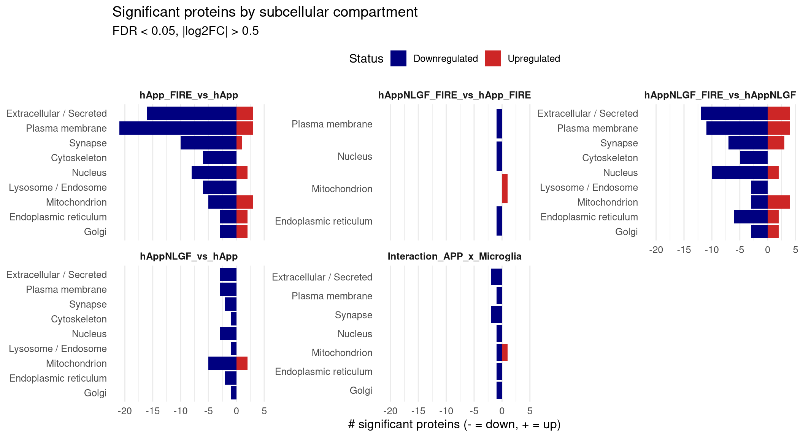
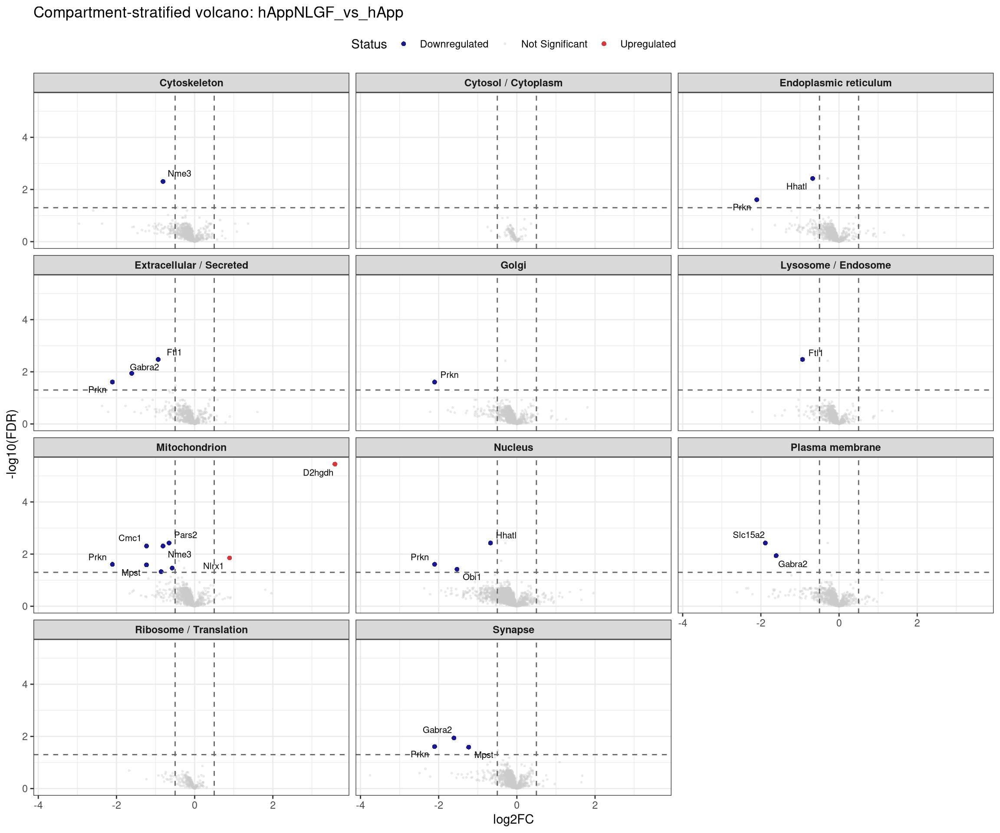
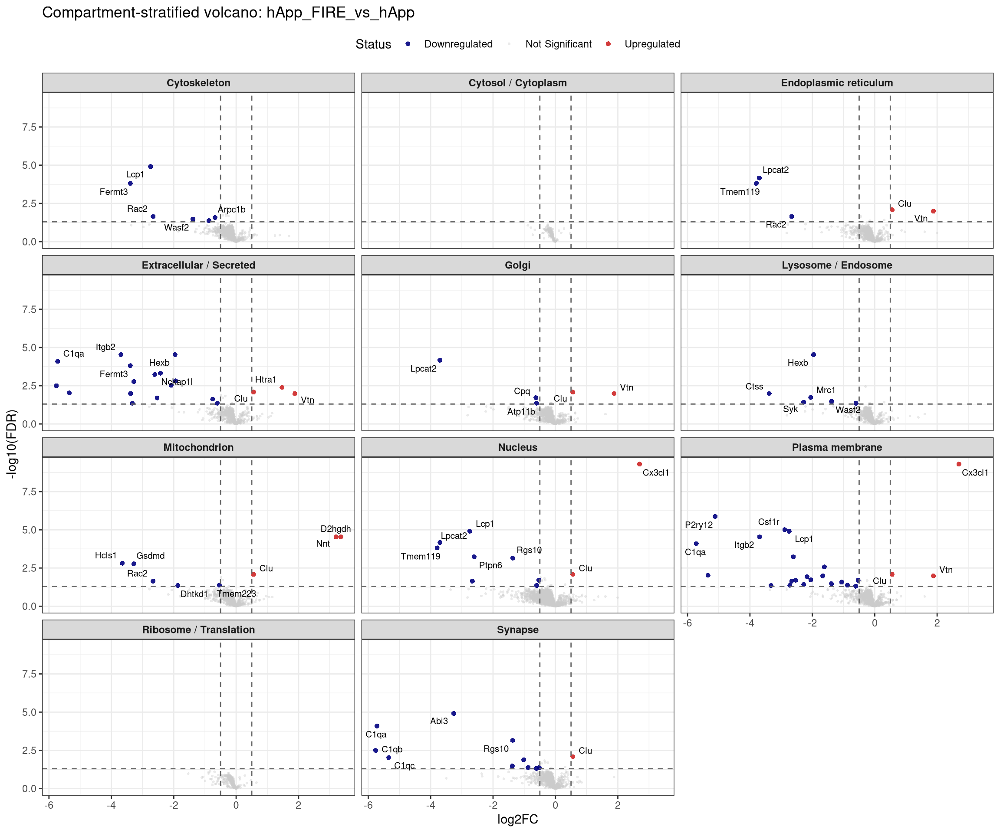
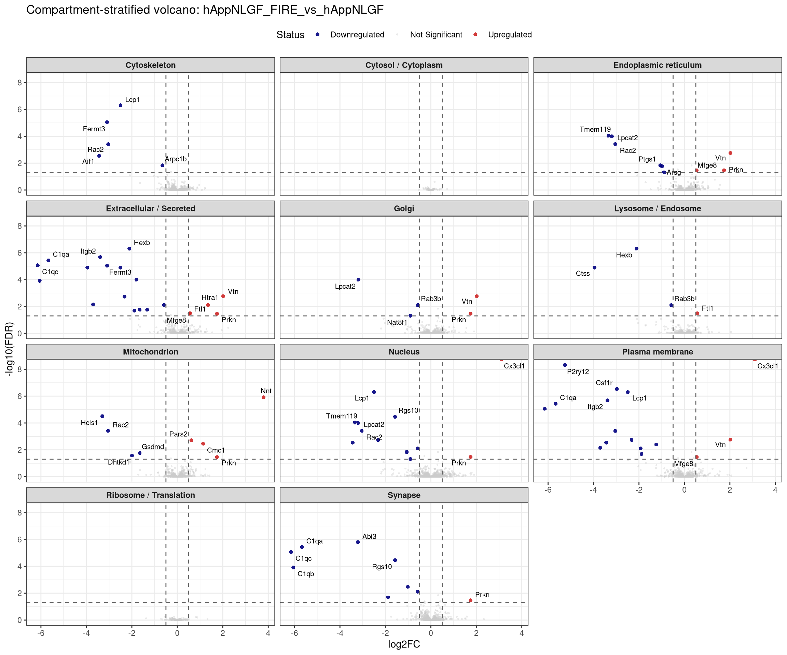
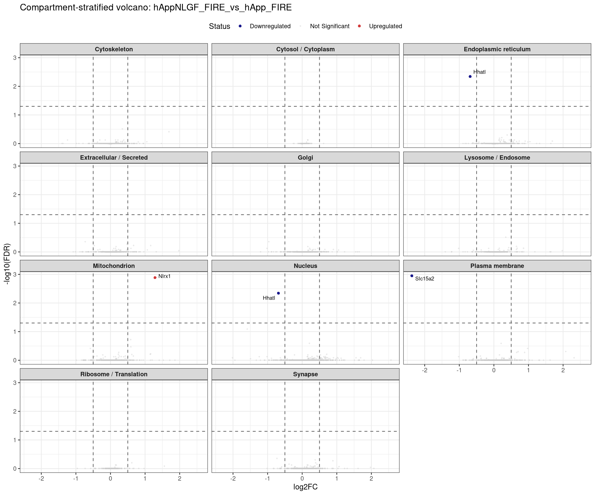
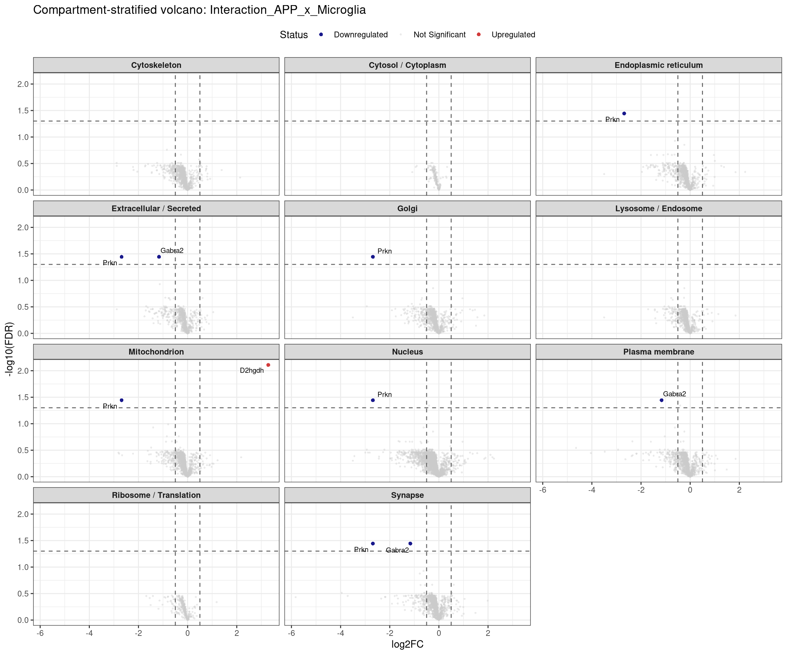

Code
suppressPackageStartupMessages({
library(data.table)
library(qs2)
library(dplyr)
library(tidyr)
library(stringr)
library(ggplot2)
library(ggrepel)
library(msigdbr)
library(scales)
})Stratifies the significant proteins from each MSstats contrast by subcellular compartment using GO Cellular Component annotations (MSigDB C5 GO:CC). Useful for spotting compartment-skewed responses (e.g. “microglia depletion is dominated by lysosomal/phagosomal proteins”) and for flagging potential secreted biomarkers.
base_dir <- "/nemo/lab/destrooperb/home/shared/zanettc/giulia_proteomics/bulk_proteomics"
run_num <- "run4"
results_dir <- file.path(base_dir, "results", run_num)
objects_dir <- file.path(base_dir, "data", "processed", run_num)
subcell_dir <- file.path(results_dir, "Subcellular")
dir.create(subcell_dir, recursive = TRUE, showWarnings = FALSE)
FDR_CUTOFF <- 0.05
LOGFC_CUTOFF <- 0.5res_df <- fread(file.path(results_dir, "Full_GroupComparison_Results.csv"))
protein_dictionary <- fread(file.path(objects_dir, "protein_dictionary.csv"))
msstats_ready <- res_df %>%
filter(!is.na(adj.pvalue), is.finite(log2FC)) %>%
left_join(protein_dictionary, by = "Protein") %>%
mutate(
Gene = ifelse(is.na(Gene) | Gene == "", Protein, Gene),
Gene_upper = toupper(Gene),
Status = case_when(
adj.pvalue < FDR_CUTOFF & log2FC > LOGFC_CUTOFF ~ "Upregulated",
adj.pvalue < FDR_CUTOFF & log2FC < -LOGFC_CUTOFF ~ "Downregulated",
TRUE ~ "Not Significant"
)
)We assign each gene to one or more broad compartments based on the GO Cellular Component gene sets (mouse). The compartment categories are defined by keyword matches against GO:CC term names — coarser than raw GO IDs but readable.
gocc <- msigdbr(species = "Mus musculus", collection = "C5", subcollection = "GO:CC")
# Compartment definitions — order matters (first match wins on the per-gene roll-up)
compartment_patterns <- list(
"Extracellular / Secreted" = "EXTRACELLULAR|SECRET",
"Plasma membrane" = "PLASMA_MEMBRANE|CELL_SURFACE|CELL_PROJECTION_MEMBRANE",
"Lysosome / Endosome" = "LYSOSOM|ENDOSOM|PHAGOSOM|AUTOPHAG",
"Mitochondrion" = "MITOCHONDRI",
"Endoplasmic reticulum" = "ENDOPLASMIC_RETICULUM|\\bER\\b",
"Golgi" = "GOLGI",
"Nucleus" = "NUCLEAR|NUCLEUS|NUCLEOLUS|NUCLEOPLASM|CHROMATIN",
"Cytoskeleton" = "CYTOSKELET|MICROTUBULE|ACTIN_FILAMENT|INTERMEDIATE_FILAMENT",
"Ribosome / Translation" = "RIBOSOM|POLYSOM|TRANSLATION_INITIATION",
"Synapse" = "SYNAPS|POSTSYNAP|PRESYNAP|AXON|DENDRITE",
"Cytosol / Cytoplasm" = "CYTOSOL|\\bCYTOPLASM\\b"
)
# Long-format gene × compartment table (one gene can hit multiple compartments)
compartment_map <- bind_rows(lapply(names(compartment_patterns), function(cmp) {
pat <- compartment_patterns[[cmp]]
gocc %>%
filter(str_detect(gs_name, pat)) %>%
distinct(gene_symbol) %>%
transmute(Compartment = cmp, Gene_upper = toupper(gene_symbol))
})) %>%
distinct()
cat("Compartment coverage (genes per compartment):\n")Compartment coverage (genes per compartment):# A tibble: 11 × 2
Compartment n
<chr> <int>
1 Nucleus 5195
2 Plasma membrane 2386
3 Cytoskeleton 2129
4 Synapse 2061
5 Mitochondrion 1802
6 Golgi 1707
7 Endoplasmic reticulum 1596
8 Extracellular / Secreted 1420
9 Lysosome / Endosome 1208
10 Ribosome / Translation 342
11 Cytosol / Cytoplasm 179sig <- msstats_ready %>% filter(Status != "Not Significant")
sig_compart <- sig %>%
inner_join(compartment_map, by = "Gene_upper", relationship = "many-to-many")
# Coverage diagnostic: significant genes that hit no compartment
no_compart <- setdiff(unique(sig$Gene_upper), unique(compartment_map$Gene_upper))
cat("Significant genes with no GO:CC annotation in our compartment list:",
length(no_compart), "/", length(unique(sig$Gene_upper)), "\n")Significant genes with no GO:CC annotation in our compartment list: 21 / 100 counts_df <- sig_compart %>%
count(Label, Compartment, Status) %>%
mutate(n_signed = ifelse(Status == "Upregulated", n, -n))
p_counts <- ggplot(counts_df, aes(x = reorder(Compartment, abs(n_signed)),
y = n_signed, fill = Status)) +
geom_col() +
scale_fill_manual(values = c("Upregulated" = "firebrick3",
"Downregulated" = "navy")) +
facet_wrap(~ Label, ncol = 3, scales = "free_y") +
coord_flip() +
labs(x = NULL, y = "# significant proteins (- = down, + = up)",
title = "Significant proteins by subcellular compartment",
subtitle = paste0("FDR < ", FDR_CUTOFF, ", |log2FC| > ", LOGFC_CUTOFF)) +
theme_minimal(base_size = 12) +
theme(legend.position = "top",
strip.text = element_text(face = "bold"),
panel.grid.major.y = element_blank())
print(p_counts)
plot_compartment_volcano <- function(contrast_label) {
sub <- msstats_ready %>%
filter(Label == contrast_label) %>%
inner_join(compartment_map, by = "Gene_upper", relationship = "many-to-many")
if (nrow(sub) == 0) return(invisible())
labels <- sub %>% filter(Status != "Not Significant") %>%
group_by(Compartment, Status) %>%
arrange(adj.pvalue) %>%
slice_head(n = 5) %>%
ungroup()
p <- ggplot(sub, aes(x = log2FC, y = -log10(adj.pvalue))) +
geom_point(aes(color = Status, size = Status, alpha = Status), shape = 16) +
scale_color_manual(values = c("Upregulated" = "firebrick3",
"Downregulated" = "navy",
"Not Significant" = "grey80")) +
scale_size_manual(values = c("Upregulated" = 1.6, "Downregulated" = 1.6,
"Not Significant" = 0.7)) +
scale_alpha_manual(values = c("Upregulated" = 0.9, "Downregulated" = 0.9,
"Not Significant" = 0.4)) +
geom_hline(yintercept = -log10(FDR_CUTOFF), linetype = "dashed", color = "grey40") +
geom_vline(xintercept = c(-LOGFC_CUTOFF, LOGFC_CUTOFF),
linetype = "dashed", color = "grey40") +
geom_text_repel(data = labels, aes(label = Gene),
size = 2.7, max.overlaps = 30, segment.color = "grey60") +
facet_wrap(~ Compartment, ncol = 3) +
labs(title = paste0("Compartment-stratified volcano: ", contrast_label),
x = "log2FC", y = "-log10(FDR)") +
theme_bw(base_size = 11) +
theme(legend.position = "top", strip.text = element_text(face = "bold"))
print(p)
ggsave(file.path(subcell_dir,
paste0("Volcano_compartments_", contrast_label, ".pdf")),
p, width = 12, height = 10, device = cairo_pdf)
}
for (cl in unique(msstats_ready$Label))
plot_compartment_volcano(cl)




Significantly changed proteins annotated as Extracellular / Secreted are useful biomarker candidates. Exported as a single ranked table.
secreted_genes <- compartment_map %>%
filter(Compartment == "Extracellular / Secreted") %>%
pull(Gene_upper)
secretome_table <- msstats_ready %>%
filter(Status != "Not Significant", Gene_upper %in% secreted_genes) %>%
arrange(Label, adj.pvalue) %>%
select(Label, Gene, Protein, Description, log2FC, adj.pvalue, Status)
cat("Secreted/extracellular hits:", nrow(secretome_table), "\n")Secreted/extracellular hits: 44 For each contrast and compartment, the 10 most significant up- and down-regulated proteins.
top_compart <- sig_compart %>%
arrange(Label, Compartment, adj.pvalue) %>%
group_by(Label, Compartment, Status) %>%
slice_head(n = 10) %>%
ungroup() %>%
select(Label, Compartment, Status, Gene, log2FC, adj.pvalue)
fwrite(top_compart, file.path(subcell_dir, "Top10_per_compartment_per_contrast.csv"))
head(top_compart, 25)R version 4.5.1 (2025-06-13)
Platform: x86_64-pc-linux-gnu
Running under: Rocky Linux 8.7 (Green Obsidian)
Matrix products: default
BLAS/LAPACK: FlexiBLAS OPENBLAS; LAPACK version 3.12.0
locale:
[1] LC_CTYPE=en_GB.UTF-8 LC_NUMERIC=C
[3] LC_TIME=en_GB.UTF-8 LC_COLLATE=en_GB.UTF-8
[5] LC_MONETARY=en_GB.UTF-8 LC_MESSAGES=en_GB.UTF-8
[7] LC_PAPER=en_GB.UTF-8 LC_NAME=C
[9] LC_ADDRESS=C LC_TELEPHONE=C
[11] LC_MEASUREMENT=en_GB.UTF-8 LC_IDENTIFICATION=C
time zone: Europe/London
tzcode source: system (glibc)
attached base packages:
[1] stats graphics grDevices utils datasets methods base
other attached packages:
[1] scales_1.4.0 msigdbr_25.1.1 ggrepel_0.9.6
[4] ggplot2_4.0.2 stringr_1.6.0 tidyr_1.3.2
[7] dplyr_1.2.0 qs2_0.1.6 data.table_1.18.2.1
loaded via a namespace (and not attached):
[1] babelgene_22.9 gtable_0.3.6 jsonlite_2.0.0
[4] compiler_4.5.1 tidyselect_1.2.1 Rcpp_1.1.1
[7] assertthat_0.2.1 yaml_2.3.12 fastmap_1.2.0
[10] R6_2.6.1 labeling_0.4.3 generics_0.1.4
[13] curl_7.0.0 knitr_1.51 htmlwidgets_1.6.4
[16] tibble_3.3.1 stringfish_0.17.0 pillar_1.11.1
[19] RColorBrewer_1.1-3 rlang_1.1.7 utf8_1.2.6
[22] stringi_1.8.7 xfun_0.56 S7_0.2.1
[25] RcppParallel_5.1.11-1 otel_0.2.0 cli_3.6.5
[28] withr_3.0.2 magrittr_2.0.4 digest_0.6.39
[31] grid_4.5.1 lifecycle_1.0.5 vctrs_0.7.1
[34] evaluate_1.0.5 glue_1.8.0 farver_2.1.2
[37] rmarkdown_2.30 purrr_1.2.1 tools_4.5.1
[40] pkgconfig_2.0.3 htmltools_0.5.9 ---
title: "7. Subcellular and secretome stratification"
format: html
---
## Overview
Stratifies the significant proteins from each MSstats contrast by subcellular compartment using GO Cellular Component annotations (MSigDB C5 GO:CC). Useful for spotting compartment-skewed responses (e.g. "microglia depletion is dominated by lysosomal/phagosomal proteins") and for flagging potential secreted biomarkers.
## Libraries
```{r setup, message=FALSE, warning=FALSE}
suppressPackageStartupMessages({
library(data.table)
library(qs2)
library(dplyr)
library(tidyr)
library(stringr)
library(ggplot2)
library(ggrepel)
library(msigdbr)
library(scales)
})
```
## Directories and parameters
```{r}
base_dir <- "/nemo/lab/destrooperb/home/shared/zanettc/giulia_proteomics/bulk_proteomics"
run_num <- "run4"
results_dir <- file.path(base_dir, "results", run_num)
objects_dir <- file.path(base_dir, "data", "processed", run_num)
subcell_dir <- file.path(results_dir, "Subcellular")
dir.create(subcell_dir, recursive = TRUE, showWarnings = FALSE)
FDR_CUTOFF <- 0.05
LOGFC_CUTOFF <- 0.5
```
## Load DE results and protein dictionary
```{r}
res_df <- fread(file.path(results_dir, "Full_GroupComparison_Results.csv"))
protein_dictionary <- fread(file.path(objects_dir, "protein_dictionary.csv"))
msstats_ready <- res_df %>%
filter(!is.na(adj.pvalue), is.finite(log2FC)) %>%
left_join(protein_dictionary, by = "Protein") %>%
mutate(
Gene = ifelse(is.na(Gene) | Gene == "", Protein, Gene),
Gene_upper = toupper(Gene),
Status = case_when(
adj.pvalue < FDR_CUTOFF & log2FC > LOGFC_CUTOFF ~ "Upregulated",
adj.pvalue < FDR_CUTOFF & log2FC < -LOGFC_CUTOFF ~ "Downregulated",
TRUE ~ "Not Significant"
)
)
```
## Build compartment → genes mapping from GO:CC
We assign each gene to one or more broad compartments based on the GO Cellular Component gene sets (mouse). The compartment categories are defined by keyword matches against GO:CC term names — coarser than raw GO IDs but readable.
```{r}
gocc <- msigdbr(species = "Mus musculus", collection = "C5", subcollection = "GO:CC")
# Compartment definitions — order matters (first match wins on the per-gene roll-up)
compartment_patterns <- list(
"Extracellular / Secreted" = "EXTRACELLULAR|SECRET",
"Plasma membrane" = "PLASMA_MEMBRANE|CELL_SURFACE|CELL_PROJECTION_MEMBRANE",
"Lysosome / Endosome" = "LYSOSOM|ENDOSOM|PHAGOSOM|AUTOPHAG",
"Mitochondrion" = "MITOCHONDRI",
"Endoplasmic reticulum" = "ENDOPLASMIC_RETICULUM|\\bER\\b",
"Golgi" = "GOLGI",
"Nucleus" = "NUCLEAR|NUCLEUS|NUCLEOLUS|NUCLEOPLASM|CHROMATIN",
"Cytoskeleton" = "CYTOSKELET|MICROTUBULE|ACTIN_FILAMENT|INTERMEDIATE_FILAMENT",
"Ribosome / Translation" = "RIBOSOM|POLYSOM|TRANSLATION_INITIATION",
"Synapse" = "SYNAPS|POSTSYNAP|PRESYNAP|AXON|DENDRITE",
"Cytosol / Cytoplasm" = "CYTOSOL|\\bCYTOPLASM\\b"
)
# Long-format gene × compartment table (one gene can hit multiple compartments)
compartment_map <- bind_rows(lapply(names(compartment_patterns), function(cmp) {
pat <- compartment_patterns[[cmp]]
gocc %>%
filter(str_detect(gs_name, pat)) %>%
distinct(gene_symbol) %>%
transmute(Compartment = cmp, Gene_upper = toupper(gene_symbol))
})) %>%
distinct()
cat("Compartment coverage (genes per compartment):\n")
compartment_map %>% count(Compartment, sort = TRUE) %>% print()
```
## Annotate the significant proteins
```{r}
sig <- msstats_ready %>% filter(Status != "Not Significant")
sig_compart <- sig %>%
inner_join(compartment_map, by = "Gene_upper", relationship = "many-to-many")
# Coverage diagnostic: significant genes that hit no compartment
no_compart <- setdiff(unique(sig$Gene_upper), unique(compartment_map$Gene_upper))
cat("Significant genes with no GO:CC annotation in our compartment list:",
length(no_compart), "/", length(unique(sig$Gene_upper)), "\n")
```
## Per-compartment counts of significant proteins per contrast
```{r compartment_counts, fig.width=11, fig.height=6}
counts_df <- sig_compart %>%
count(Label, Compartment, Status) %>%
mutate(n_signed = ifelse(Status == "Upregulated", n, -n))
p_counts <- ggplot(counts_df, aes(x = reorder(Compartment, abs(n_signed)),
y = n_signed, fill = Status)) +
geom_col() +
scale_fill_manual(values = c("Upregulated" = "firebrick3",
"Downregulated" = "navy")) +
facet_wrap(~ Label, ncol = 3, scales = "free_y") +
coord_flip() +
labs(x = NULL, y = "# significant proteins (- = down, + = up)",
title = "Significant proteins by subcellular compartment",
subtitle = paste0("FDR < ", FDR_CUTOFF, ", |log2FC| > ", LOGFC_CUTOFF)) +
theme_minimal(base_size = 12) +
theme(legend.position = "top",
strip.text = element_text(face = "bold"),
panel.grid.major.y = element_blank())
print(p_counts)
ggsave(file.path(subcell_dir, "Compartment_counts_by_contrast.pdf"),
p_counts, width = 11, height = 6, device = cairo_pdf)
```
## Stratified volcano — facet by compartment for one contrast at a time
```{r facet_volcano, fig.width=12, fig.height=10}
plot_compartment_volcano <- function(contrast_label) {
sub <- msstats_ready %>%
filter(Label == contrast_label) %>%
inner_join(compartment_map, by = "Gene_upper", relationship = "many-to-many")
if (nrow(sub) == 0) return(invisible())
labels <- sub %>% filter(Status != "Not Significant") %>%
group_by(Compartment, Status) %>%
arrange(adj.pvalue) %>%
slice_head(n = 5) %>%
ungroup()
p <- ggplot(sub, aes(x = log2FC, y = -log10(adj.pvalue))) +
geom_point(aes(color = Status, size = Status, alpha = Status), shape = 16) +
scale_color_manual(values = c("Upregulated" = "firebrick3",
"Downregulated" = "navy",
"Not Significant" = "grey80")) +
scale_size_manual(values = c("Upregulated" = 1.6, "Downregulated" = 1.6,
"Not Significant" = 0.7)) +
scale_alpha_manual(values = c("Upregulated" = 0.9, "Downregulated" = 0.9,
"Not Significant" = 0.4)) +
geom_hline(yintercept = -log10(FDR_CUTOFF), linetype = "dashed", color = "grey40") +
geom_vline(xintercept = c(-LOGFC_CUTOFF, LOGFC_CUTOFF),
linetype = "dashed", color = "grey40") +
geom_text_repel(data = labels, aes(label = Gene),
size = 2.7, max.overlaps = 30, segment.color = "grey60") +
facet_wrap(~ Compartment, ncol = 3) +
labs(title = paste0("Compartment-stratified volcano: ", contrast_label),
x = "log2FC", y = "-log10(FDR)") +
theme_bw(base_size = 11) +
theme(legend.position = "top", strip.text = element_text(face = "bold"))
print(p)
ggsave(file.path(subcell_dir,
paste0("Volcano_compartments_", contrast_label, ".pdf")),
p, width = 12, height = 10, device = cairo_pdf)
}
for (cl in unique(msstats_ready$Label))
plot_compartment_volcano(cl)
```
## Secretome candidates — flagged separately
Significantly changed proteins annotated as Extracellular / Secreted are useful biomarker candidates. Exported as a single ranked table.
```{r secretome}
secreted_genes <- compartment_map %>%
filter(Compartment == "Extracellular / Secreted") %>%
pull(Gene_upper)
secretome_table <- msstats_ready %>%
filter(Status != "Not Significant", Gene_upper %in% secreted_genes) %>%
arrange(Label, adj.pvalue) %>%
select(Label, Gene, Protein, Description, log2FC, adj.pvalue, Status)
cat("Secreted/extracellular hits:", nrow(secretome_table), "\n")
fwrite(secretome_table, file.path(subcell_dir, "Secretome_candidates.csv"))
head(secretome_table, 30)
```
## Per-compartment top hits — wide table per contrast
For each contrast and compartment, the 10 most significant up- and down-regulated proteins.
```{r top_per_compartment}
top_compart <- sig_compart %>%
arrange(Label, Compartment, adj.pvalue) %>%
group_by(Label, Compartment, Status) %>%
slice_head(n = 10) %>%
ungroup() %>%
select(Label, Compartment, Status, Gene, log2FC, adj.pvalue)
fwrite(top_compart, file.path(subcell_dir, "Top10_per_compartment_per_contrast.csv"))
head(top_compart, 25)
```
## Session info
```{r}
sessionInfo()
```